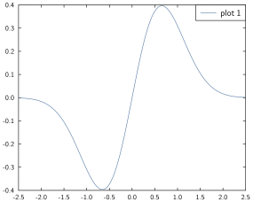
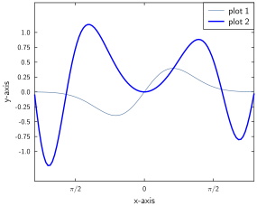

Quickstart
Once both GLE and GPlot are successfully installed, this short tutorial should give a feeling for how things work; for more detailed instructions refer to the rest of the manual. We will draw a simple plot with two curves, labels, and basic axis styling.
Let's start by creating a simple figure
fig = Figure()it is not required to explicitly call Figure(); if no figure currently exists, the first plotting command will generate one with default parameters.
Let's now define a function which we would like to plot over the range [-2.5, 2.5]:
x = range(-2.5, stop=2.5, length=100)
y = @. exp(-x^2) * sin(x)
plot(x, y, label="plot 1")
legend()where we've used the @. syntax to indicate that the operations are done pointwise on x. The syntax should hopefully feel reasonable thus far.

Let's add another curve on this figure and change the colour; let's also specify axis limits, where the ticks have to be etc:
y2 = @. sin(x^2) * exp(-x/10)
plot!(x, y2, col="blue", lwidth=0.05, label="plot 2")
xlabel("x-axis")
ylabel("y-axis")
xticks([-pi/2, 0, pi/2], ["π/2", "0", "π/2"])
ylim(-1.5, 1.5)
yticks(-1:0.25:1)
legend()One thing worth noting at this point is that we follow the julia Plots convention adding a ! after plot to indicate that it should modify the current graph without overwriting it (i.e. the curve is added on top of the existing one).

Now we can save this figure:
savefig(fig, "my_first_figure.pdf")the command picks up the format (here .pdf) saves the file in the current folder.
If you got this far thinking that all this seems reasonable, have a look at the rest of the doc to learn how to plot what you want and how you want it 📊 , happy plotting!